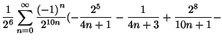
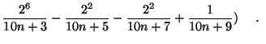
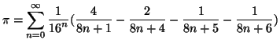
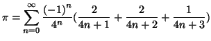
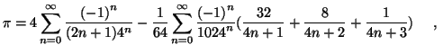

|  | |||
|  | (1) |
Fabrice Bellard
January 20, 1997
We describe here a mean to find formulas similar to those in [1]. We
show in particular that
This formula is very interesting because, with the algorithm described in
[1], it enables us to compute the th binary digit of 43%
faster than the previous known formula [1]:
|  | (2) |
The method to get formulas such as (1) is in fact very simple.
We use that
In particular
With
in (3) we get
|  | (5) |
Some classical arctangent relations give interesting results:
In particular, we obtain from (6) and (3)
|  |
The existence of a formula faster than (1) to calculate the th binary digit of remains an open question.